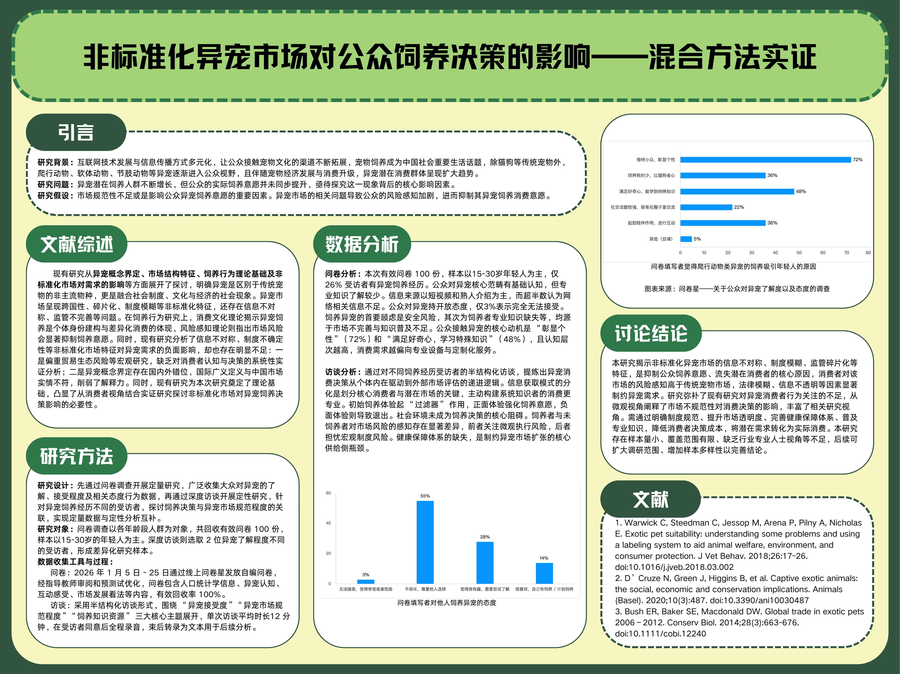
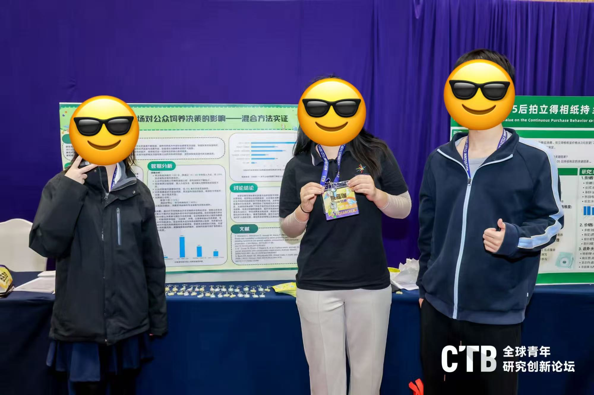
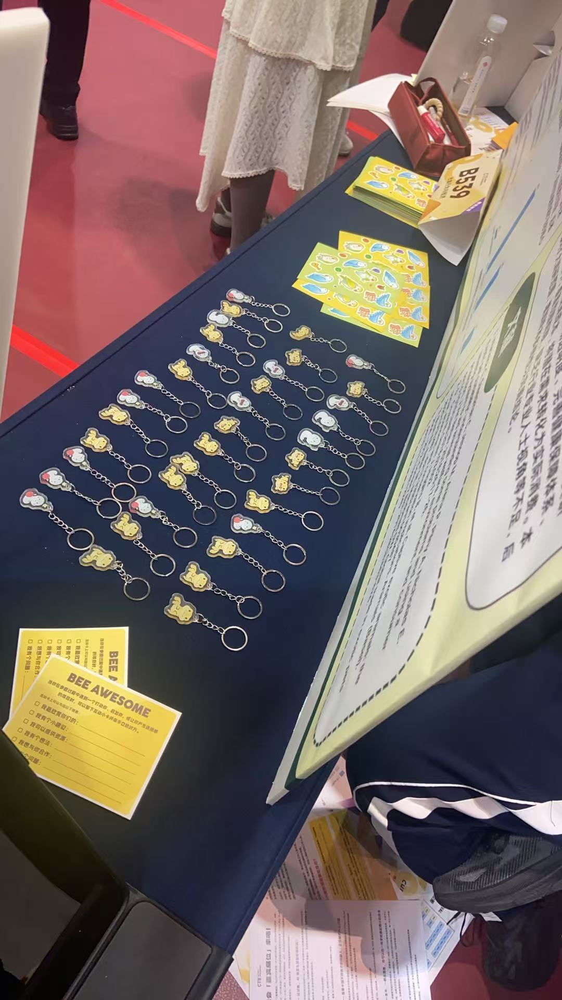

01
China's Exotic Pet Market
What happens when millions of people keep animals that no one planned for?



Problem
China's exotic pet market is fast-growing, fragmented and only loosely regulated. How do consumer motives and market conditions shape the decision to keep an exotic animal?
Method
100+ questionnaires, 2 in-depth interviews and market observation — set against a comparison with markets abroad — written up as a 10,000+ word research paper.
Output
A research paper that advanced to the CTB national round, mapping the demand side of a market built on non-domesticated species.
Reflection
Change begins with understanding demand, not blaming the buyer. The study made me ask what a better path into pet ownership could look like — see the adoption proposal below.